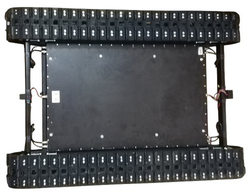

Универсальный гусенечный дрон ГД-2
Вездеходная платформа с широкой областью применения.
Cлужит для перевозки людей и грузов, эвакуации из труднодоступных мест.
Данный вид транспорта может преодолевать уклоны и подъемы до 40 градусов, водные преграды, рыхлый снег, песок, грязь.
Основные достоинства дрона

- Простота конструкции
- Не требует обслуживания
- Абсолютная тишина при движении
- Отсутствие редукторов, цепных передач
- Малый вес
- Огромный запас хода
- Большая мощность
- Высока скорость движения
- Ультракомпактные размеры
- Легко модифицировать под любое оборудование
- Имеет множество вариантов управления
- Низкая цена
Характеристики
- Размеры ДхШхВ 135х93х30 см
- Дорожный просвет 16 см
- Вес 65 кг
- Мощность 1400 ватт
- Скорость движения до 40 км/ч
- Батарея 42 вольта 64 ампера
- Запас хода на одном заряде 3-6 часов (30-60 км)
- Грузоподъемность 150 кг
- Tяговое усилие 160 кг
- Температура эксплуатации от -30 до 42 С
- Степень защиты IP65
Компоненты
Аккумулятор
ГД-2 оснащен платой Smart BMS что в значительной степени продлевает срок службы аккумулятора и дает широкие возможности по контролю и настройке аккумулятора , позволяет следит за температурой аккумулятора, показаниям силы тока, остаточным зарядом , износом аккумулятора , и многими другими параметрами. В случае если заряда не хватило доехать до места назначения можно увеличить глубину разряда что позволит вам продолжить движение.